Apa Itu Javascript?
JavaScript adalah salah satu bahasa pemrograman yang paling banyak digunakan dalam kurun waktu dua puluh tahun ini. Bahkan JavaScript juga dikenal sebagai salah satu dari tiga bahasa pemrograman utama bagi web developer:
- HTML: Memungkinkan Anda untuk menambahkan konten ke halaman web
- CSS: Menentukan layout, style, serta keselarasan halaman website
- JavaScript: Menyempurnakan tampilan dan sistem halaman web.
Apa saja kelebihan dari JavaSCript
- Javascript dirancang untuk membuat halaman HTML menjadi interaktif
- Javascript merupakan scripting language
- Scripting language adalah bahasa pemrograman yang kecil dan ringan
- Javascript tidak memerlukan proses compile
- Javascript berlisensi gratis
- Javascript bersifat case-sensitive
Penulisan Javascript
Javascript ditulis diantara tag <script></script>
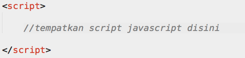Penempatan Javascript
- Ditempatkan di akhir halaman, sebelum </body>
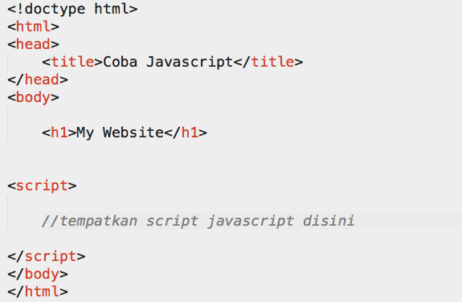
- Ditempatkan sebagai file eksternal

Variabel
- Digunakan untuk menampung data, baik itu integer, string, dll
- Tidak usah mendefinisikan tipe datanya
- Bersifat case-sensitive
- Nama variabel harus diawali dengan huruf atau underscore
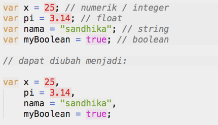
Operator
Ada beberapa operator yang terdapat pada javascript, berikut ini diantaranya:Operator Aritmatika
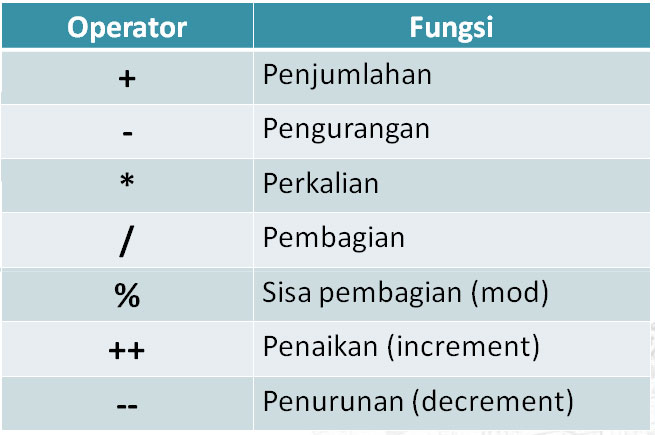
Operator Assignment / Penugasan
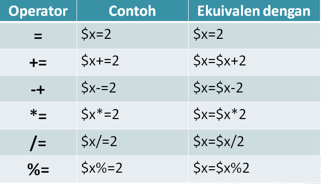
Operator Perbandingan
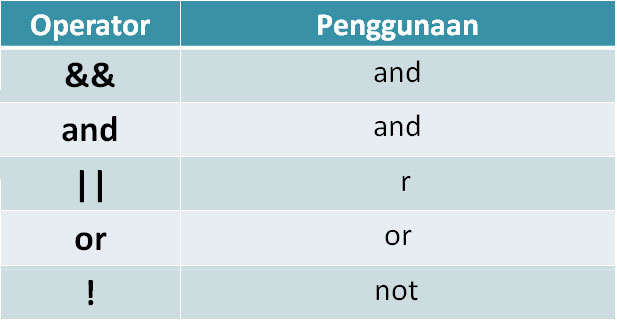
Function
- Sebuah fungsi berisi source code yang akan dieksekusi ketika dipanggil.
- Fungsi bisa mengembalikan nilai ke pemanggilnya.
- Terdiri dari fungsi built-in, fungsi deklarasi, fungsi ekspresi
- Fungsi deklarasi dan fungsi ekspresi merupakan fungsi yang kita buat sendiri untuk membantu mempermudah pekerjaan, perbedaannya hanya pada cara pembuatannya.
- Fungsi Built-in
adalah fungsi-fungsi bawaan yang dimiliki oleh javascript yang dapat kita gunakan pada script yang kita buat.
daftar lengkap fungsi built-in dapat kalian download disini.
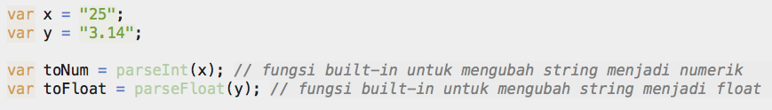
- Fungsi Deklarasi
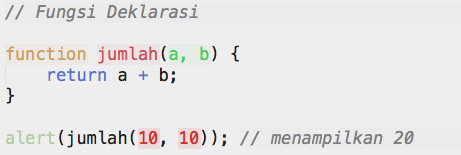
- Fungsi Ekspresi
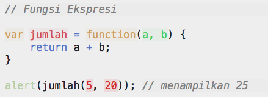
Array
- Array adalah object javascript yang digunakan untuk menyimpan lebih dari satu nilai pada sebuah variabel
- Method built-in untuk array juga dapat dilihat disini.
- Contoh penggunaan Array
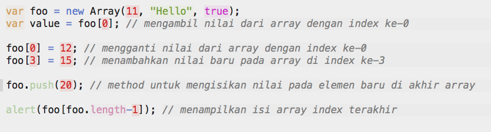
- Dapat juga ditulis seperti ini:
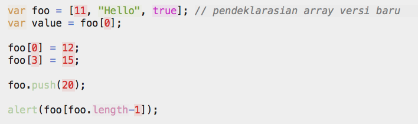
- Penggunaan Array di Console Web Browser 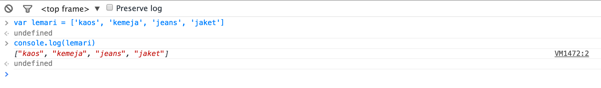
Object
Object secara sederhana dapat di pahami sebagai perwakilan benda di dunia nyata.
Suatu object di javascript dapat dinyatakan dengan :
-
var object = { attr: 'value', attr: 'value', } -
var object = function(){ var attr = 'value'; return{ attr: attr } } -
var object = (function(){ var attr = 'value'; return{ attr: attr } })()
- "Semua" yang ada di javascript merupakan Object: String, Number, Array, dll
- Javascript memungkinkan kita untuk mendefinisikan Objek kita sendiri
- Javascript juga memiliki built-in Object yang dapat juga dilihat disini.
- Setiap Object dapat memiliki Property dan Method
- Membuat Object, Property dan Method sendiri
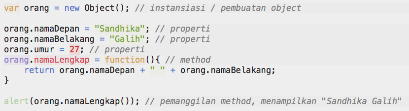
- Penulisannya dapat diubah menjadi:
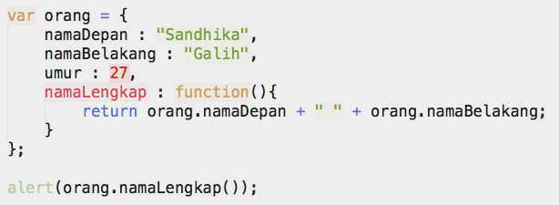
Pengkondisian
Terdapat beberapa jenis pengkondisian pada javascript, berikut ini diantaranya:- if..
- if.. else..
- if.. else if.. else
- switch
if..

if.. else..
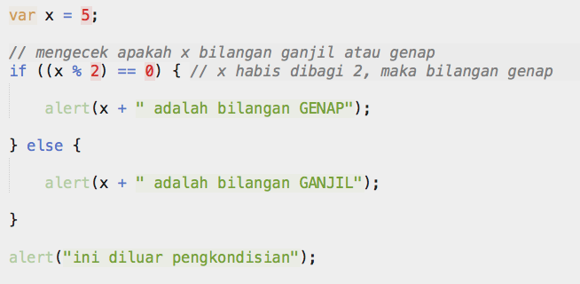if.. else if.. else..
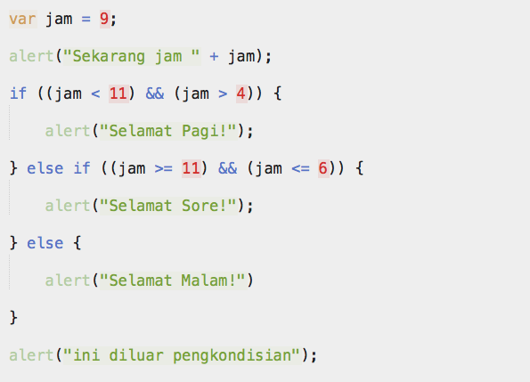Pengulangan
Terdapat 2 jenis pengulangan pada javascript, yaitu :- for
- digunakan untuk mengulang sebuah blok perintah sebanyak beberapa kali sesuai dengan kebutuhan.
- ada kemungkinan untuk tidak mengeksekusi blok perintah jika kondisi pertama bernilai false.
contoh pengulangan isi array
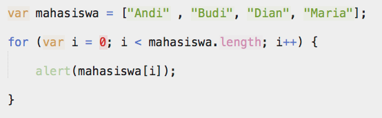- while
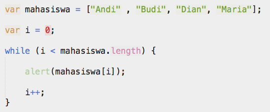
Popup Box
Javascript memiliki 3 buah popup, yaitu:- Alert Box
Digunakan untuk memberikan informasi ke pengguna.
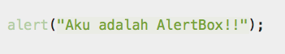
hasil:
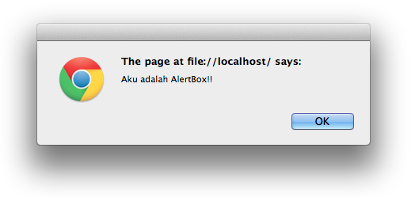
- Confirm Box
Digunakan apabila aplikasi membutuhkan verifikasi atau persetujuan dari pengguna.
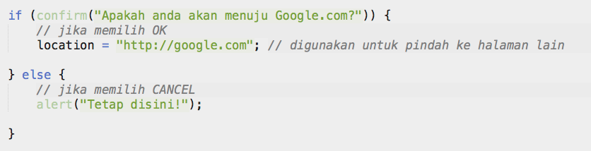
hasil:
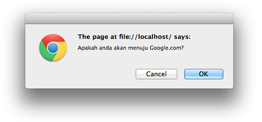
- Prompt Box
Digunakan untuk menyimpan inputan dari user

hasil:
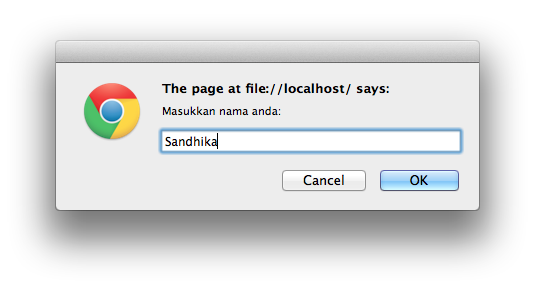
DOM
- DOM, singkatan dari Document Object Model, adalah sebuah cross-platform dan sebuah bahasa independen untuk merepresentasikan dan berinteraksi dengan objek dalam HTML, XHTML, dan dokumen XML.
- HTML DOM adalah cara baku untuk mengakses dan memanipulasi dokumen HTML.
- Setiap dokumen HTML yang ditampilkan pada browser akan menjadi sebuah Document Object.
- Sebuah Document Object menyediakan akses ke semua elemen HTML di dalam halaman.
- Setiap elemen HTML dapat diakses dengan JavaScript atau bahasa pemrograman lain.
Struktur DOM
Dalam HTML DOM, semua yang berada di dokumen HTML adalah sebuah node (titik)- Seluruh dokumen HTML disebut document node.
- Setiap elemen HTML disebut element node.
- Text di dalam elemen HTML disebut text node.
- Setiap atribut TAG HTML disebut atribute node.
- Komentar disebut comment node.
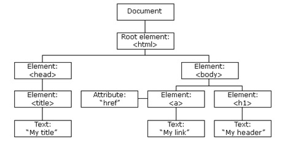
Properti DOM
Berikut ini adalah properti dari DOM.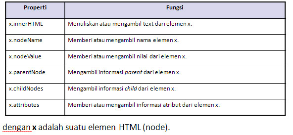
Fungsi DOM
Berikut ini beberapa fungsi yang dimiliki oleh DOM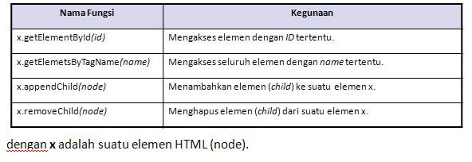
Javascript DOM Event
Dengan menggunakan DOM, kita dapat mendaftarkan event handler yang berbeda untuk tiap-tiap elemen pada dokumen HTML.
Sebuah event pada dasarnya merupakan kombinasi dari fungsi.
Daftar event pada javascript dapat dilihat disini.
Daftar Event

Latihan 8a - Pengecekan Nilai
L8a<NRP>.html- Buatlah program untuk menghitung 'grade' dari nilai kuliah
- Gunakan prompt untuk mengambil nilai
- Gunakan pengkondisian
- Program berfungsi untinputuk mengkonversi nilai yang tadinya berupa angka menjadi huruf
- Spesifikasi nilai sebagai berikut:
- nilai lebih kecil dari 40, grade : E
- lebih kecil dari 65, grade : D
- lebih kecil dari 75, grade : C
- lebih kecil dari 85, grade : B
- lebih kecil sama dengan 100, grade : A
Contoh Hasil:
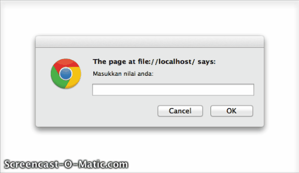Latihan 8b - Memilih menu makanan
L8b<NRP>.html- Buatlah program untuk memilih menu makanan
- Gunakan prompt untuk mengambil nilai
- Gunakan pengkondisian
- Program berfungsi untuk memilih menu makanan dan menghitung total biaya berdasarkan jumlah makanan yang dimasukan
Contoh Hasil:
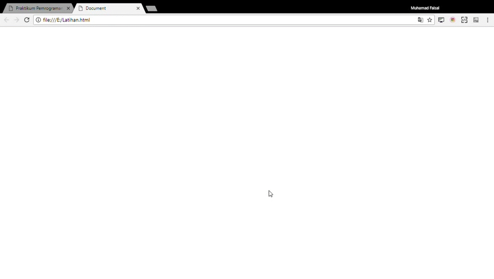Latihan 8c - Suit Jawa (Gajah, Orang, Semut)
L8c<NRP>.htmlDiketahui potongan script sebagai berikut:
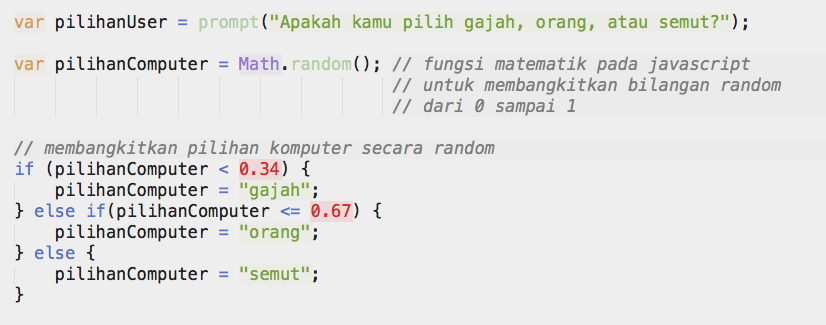tambahkanlah sebuah fungsi untuk membandingkan pilihan user dengan pilihan computer, dengan spesifikasi sebagai berikut:
- aturan yang digunakan adalah aturan standar suit. (cth: gajah menang melawan orang, tp kalah melawan semut, dll.)
- tampilkan pesan akhir menggunakan alert, untuk mengetahui siapa yang menang (user atau computer)
- apabila pesan yang diinputkan user tidak sesuai (bukan gajah, orang, atau semut), maka tampilkan pesan kesalahan.
Contoh Hasil:
Latihan 8d - Karakter Diagonal
L8d<NRP>.html- Buatlah program untuk membuat segitiga bintang
- Gunakan prompt untuk mengambil nilai
- Gunakan pengulangan
Contoh Hasil:

Latihan 8e - Membuat huruf
L8e<NRP>.htmlGunakan source code yang ada pada link ini untuk latihan 7e

Pada latihan 2, mengubah huruf dalam cover menjadi kapital dan sebaliknya.
perhatikan, coba serta pahami kode berikut ini :

Apabila ada kesulitan segera bertanya pada asisten atau dosen.